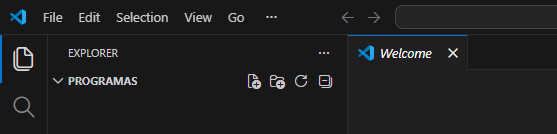

Entorno de desarrollo
Si Powershell no te permite ejecutar los comandos, abrí una Terminal como Administrador e introducí:
Set-ExecutionPolicy RemoteSignedPresiona Y luego Enter
Cerrá la Terminal y ejecuta los comandos, según elección en una Terminal normal
⚠️ Se cambia MinGW64 por MinGW32 para seguir la teoría de la cursada ⚠️
MinGW64 + Visual Studio Code
Obtener MinGW64 que contiene GCC, GDB y make, descargarlo, descomprimirlo en la unidad C en la carpeta mingw64.
Abrimos la terminal e ingresamos la siguiente línea:
$url="https://github.com/niXman/mingw-builds-binaries/releases/download/15.2.0-rt_v13-rev1/x86_64-15.2.0-release-posix-seh-ucrt-rt_v13-rev1.7z"; $tmp="$env:TEMP\mingw.7z"; $dir="$env:TEMP\mingw_extract"; Invoke-WebRequest $url -OutFile $tmp; New-Item -ItemType Directory -Force -Path $dir | Out-Null; tar -xf $tmp -C $dir; Move-Item "$dir\mingw64" "C:\mingw64"Tras terminar y ver nuevamente que podemos introducir comandos, agragamos gcc y gdb a las variables de entorno y hacemos un Hard link para make:
setx PATH "$env:PATH;C:\mingw64\bin"New-Item C:\mingw64\bin\make.exe -ItemType HardLink -Value C:\mingw64\bin\mingw32-make.exeCerrar la terminal y abrir una nueva para comprobar que se agregó:
gcc --versionmake --versionMinGW32 + Visual Studio Code
Obtener MinGW32 que contiene GCC, GDB y make, descargarlo, descomprimirlo en la unidad C en la carpeta mingw32.
Abrimos la terminal e ingresamos la siguiente línea:
$url="https://github.com/niXman/mingw-builds-binaries/releases/download/15.2.0-rt_v13-rev1/i686-15.2.0-release-posix-dwarf-ucrt-rt_v13-rev1.7z"; $tmp="$env:TEMP\mingw.7z"; $dir="$env:TEMP\mingw_extract"; Invoke-WebRequest $url -OutFile $tmp; New-Item -ItemType Directory -Force -Path $dir | Out-Null; tar -xf $tmp -C $dir; Move-Item "$dir\mingw32" "C:\mingw32"Tras terminar y ver nuevamente que podemos introducir comandos, agragamos gcc y gdb a las variables de entorno y hacemos un Hard link para make:
setx PATH "$env:PATH;C:\mingw32\bin"New-Item C:\mingw32\bin\make.exe -ItemType HardLink -Value C:\mingw32\bin\mingw32-make.exeCerrar la terminal y abrir una nueva para comprobar que se agregó:
gcc --versionmake --versionInstalar Microsoft Visual Studio Code y las extensiones necesarias para C
Abrimos otra terminal de PowerShell e ingresamos la siguiente línea:
winget install Microsoft.VisualStudioCode ; $code="$env:LOCALAPPDATA\Programs\Microsoft VS Code\bin\code.cmd" ; foreach($e in @("ms-vscode.cpptools","ms-vscode.cpptools-extension-pack","ms-vscode.makefile-tools")){ & $code --install-extension $e }Abrimos VS Code, marcamos Mark Done en los settings de IA que pide y cerramos el chat lateral
Abrimos Get started with C++ development, indicamos NO a acceder al pre-release
⚠️ Va a diferir en que verá at C:/mingw32/bin con el toolchain de 32 bits ⚠️
Pulsamos el boton Set my Default Compiler, elegimos use gcc.exe found at C:/mingw64/bin presionamos Mark Done.Creamos un directorio en nuestra PC y abrimos ese directorio con Open folder. Ej:. C:\Programa
Una vez abierto pulsamos Yes, trust the authors, creamos un nuevo directorio desde el menu lateral EXPLORER

Luego creamos un código C mediante el primer icono New File, indicamos nombre y extensión. ej:. main.c.
Opcionalmente, creamos un archivo Makefile.
Code::Blocks + MinGW
winget install CodeBlocks.CodeBlocks.MinGW
Alternativa, Code Blocks con MinGW integrado, tras instalarse, cerrar la Terminar y abrir una nueva, iniciarlo con codeblocks,
darle a OK y seleccionamos Yes, associate Code::Blocks with C/C++ file types, OK.
Creamos un nuevo proyecto desde File → New Proyect → Files → C/C++ Source → Go
En el asistente que sigue darle a Next → C → Next → .... Elegir donde estará nuestro programa e indicar un nombre sin extensión, es asignada, presionar Finish
Se compila presionando el ícono de la tuerca y se ejecuta con el ícono de play o desde el menú Build
Sin IDE, Editor de texto + MinGW
Usamos cualquier editor de texto, notepad o notepad++ que trae resaltado de código
Notepad++:
winget install Notepad++.Notepad++MinGW:
32 bits (Usado en la cursada)
$url="https://github.com/niXman/mingw-builds-binaries/releases/download/15.2.0-rt_v13-rev1/i686-15.2.0-release-posix-dwarf-ucrt-rt_v13-rev1.7z"; $tmp="$env:TEMP\mingw.7z"; $dir="$env:TEMP\mingw_extract"; Invoke-WebRequest $url -OutFile $tmp; New-Item -ItemType Directory -Force -Path $dir | Out-Null; tar -xf $tmp -C $dir; Move-Item "$dir\mingw32" "C:\mingw32"Tras terminar y ver nuevamente que podemos introducir comandos, agragamos gcc y gdb a las variables de entorno y hacemos un Hard link para make:
setx PATH "$env:PATH;C:\mingw32\bin"New-Item C:\mingw32\bin\make.exe -ItemType HardLink -Value C:\mingw32\bin\mingw32-make.exeCerrar la terminal y abrir una nueva para comprobar que se agregó:
gcc --versionmake --version64 bits
$url="https://github.com/niXman/mingw-builds-binaries/releases/download/15.2.0-rt_v13-rev1/x86_64-15.2.0-release-posix-seh-ucrt-rt_v13-rev1.7z"; $tmp="$env:TEMP\mingw.7z"; $dir="$env:TEMP\mingw_extract"; Invoke-WebRequest $url -OutFile $tmp; New-Item -ItemType Directory -Force -Path $dir | Out-Null; tar -xf $tmp -C $dir; Move-Item "$dir\mingw64" "C:\mingw64"Tras terminar y ver nuevamente que podemos introducir comandos, agragamos gcc y gdb a las variables de entorno y hacemos un Hard link para make:
setx PATH "$env:PATH;C:\mingw64\bin"New-Item C:\mingw64\bin\make.exe -ItemType HardLink -Value C:\mingw64\bin\mingw32-make.exeCerrar la terminal y abrir una nueva para comprobar que se agregó:
gcc --versionmake --version¿Cómo compilar?
Simplemente abrimos la Terminal en la ubicación de nuestro código fuente e ingresamos:
gcc -std=c11 -Wall -Wextra -pedantic main.c -o mainY lo ejecutamos:
./main.exeSi usamos Makefile:
Al guardar elegir All types (*.*), para que quede sin extensión el archivo Makefile
makeY lo ejecutamos:
./main.exePara recompilar de cero ejecutamos make clean para limpiar la compilación previa, make para compilar:
make clean
make
./main.exe